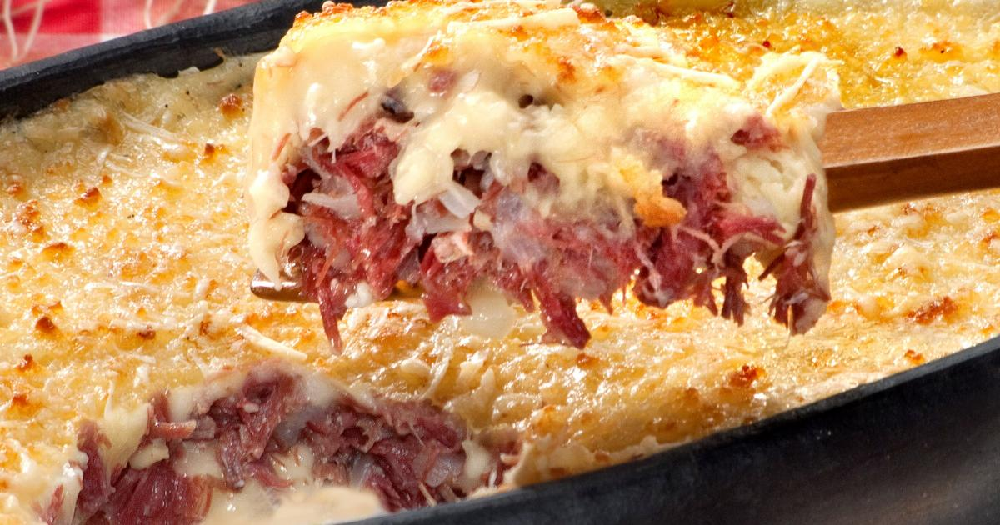

Brazilian Sheperd's Pie
Escondidinho de Carne de Sol

Description
Escondidinho is a beloved Brazilian dish that might take some time to prepare, but the effort is well rewarded. You can spread the steps over several days to make it more manageable. It makes plenty of servings and is perfect as a satisfying one-dish meal.
Below we guide you step-by-step through a recipe to prepare this delicious dish.
Preparing the beef
Ingredients:
- 1 kg of sun-dried meat;
- 2 ripe tomatoes;
- 2 onions;
- 2 garlic cloves;
- 5 springs of parsley;
- Olive oil to taste;
- Salt and pepper to taste.
Steps:
- Cut the sun-dried meat in cubes of approximately 7 cm - it's the ideal size for removing the excess salt of the meat. Rinse well under running water and place the cubes in a bowl;
- Cover the beef cubes with 5 cups of cold water and let it in the refrigerator for 12 hours - change the water at least 2 times during the desalting proccess;
- Drain the water and transfer the beef to a pressure cooker, cover with water until the water reaches halfway through the cooker, close it and cook over high heat. As soon as the cooker starts to whistle, lower the heat and let it cook for 30 more minutes. Meanwhile, prepare the other ingredients;
- Peel and finely chop the onions and garlic. Wash, dry, and cut the tomatoes in half; discard the seeds and dice each half into small pieces. Wash, dry, and coarsely chop the parsley;
- After the cooking time, turn off the heat. Wait for all the pressure to release before opening the pressure cooker (if you prefer, lift the valve with a fork to speed up the process). Reserve ½ cup of the cooking liquid and transfer the meat to a serving dish. Discard the excess fat and shred the meat while still hot using two forks;
- Heat a large skillet (or pan) over medium heat. When hot, drizzle 2 tablespoons of olive oil, add the onion, season with a pinch of salt, and sauté for 2 minutes until softened. Add the garlic and tomato, stirring for 1 minute. Drizzle with another 2 tablespoons of olive oil, add the shredded meat, season with salt and pepper, and cook for 2 minutes to absorb the flavors. Stir in the reserved cooking liquid and parsley. Transfer to a bowl and set aside for assembly;
Preparing the Cassava Purée and Assembling
Ingredients:
- 1 kg of peeled cassava
- 1 cup of milk
- 2½ spoons of butter
- 1 cup of shredded coalho cheese
- Salt to taste
Steps:
- Preheat the oven to 240° C (high heat)
- Cut the cassava into large 8 cm slices. Place them in a pressure cooker and cover with water, making sure not to exceed ⅔ of the pot capacity. Cook over high heat. When it starts to whistle, lower the heat and cook for 10 minutes.
- Turn off the heat and wait for all the pressure to release before opening the pressure cooker. Drain the water from the cassava and transfer the pieces to a large pot.
- Discard the central fibrous core and mash the hot cassava pieces directly in the pot using a potato masher (or a fork, if you prefer).
- Add the milk and place the pot over low heat. Stir well with a spatula for about 5 minutes until a creamy purée forms. Season with salt and mix in the butter.
- To assemble the escondidinho: fill 8 individual ramekins with the sautéed dried beef; top with the cassava purée and sprinkle with grated queijo coalho cheese. Bake for about 20 minutes, or until the cheese melts and turns golden. Remove from the oven and serve immediately.